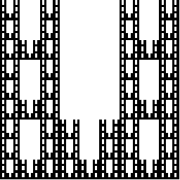
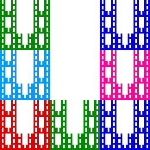

Similarity Dimension
Example Calculations
The shape can be decomposed into N = 7 pieces, each scaled by a factor of
r = 1/3,
do d
s
= Log(7)/Log(3). Note this fractal is gotten from the
Sierpinski carpet
by removing the top middle (
red
) piece.


Return to
Similarity Dimension Exercises
.